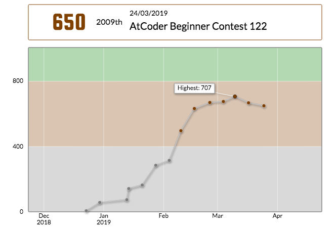

AtCoder ABC122
二連続でレート下げるとかやる気あんのか？

A
焦りまくって文字の対応を間違えそうになった。
signed main() {
string b;
cin >> b;
string ans;
if (b == "A")
ans = "T";
else if (b == "C")
ans = "G";
else if (b == "G")
ans = "C";
else
ans = "A";
cout << ans << endl;
}
B
BでWAするの何ヶ月ぶりだろうか。 クソコード書いて提出。いつまでたっても部分文字列を得意にできない。
bool check(string& s) {
for(auto c:s) {
if(!(c=='A' || c=='T' || c=='C' || c=='G')) {
return false;
}
}
return true;
}
signed main() {
string s;cin>>s;
const int len = s.size();
if(len == 1) {
if(check(s)) {
cout<<1<<endl;
} else {
cout<<0<<endl;
}
return 0;
}
int ans=0;
rep(i,0,len-1) {
string t;t+= s[i];
if(!check(t)) continue;
rep(j,i+1,len){
string b;b+=s[j];
if(!check(b)) {
break;
}
t+=s[j];
}
ans = max<int>(ans, t.size());
}
cout<<ans<<endl;
}
C
最初、どこに「AC」があるのかを記録するのになぜかpair<int,int>, int型の連想配列を使っていた。冷静に考えればオーダーがO(n^2logn)になって間に合うわけがないのに。 最後の方でようやく累積和ということに気づく。しかし、焦りに焦っていた頭と腕だとバグり散らかしたコードしか書けず、結局ACすることはなかった。アホめ。
D
問題文を見てすらない。
所感
修行の旅に出ます。